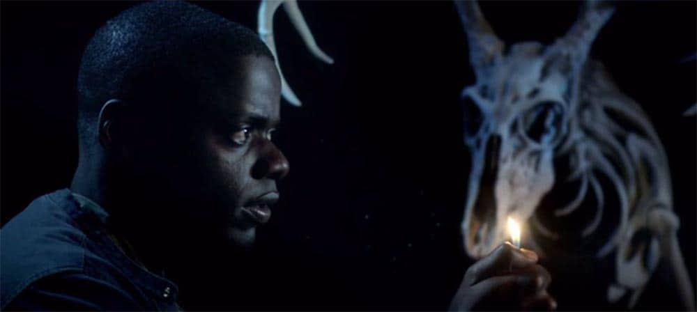
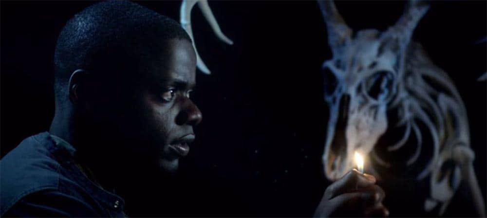

- Titre original: Joker
- Réalisation:Todd Phillips
- Scénario:
- Todd Phillips
- Scott Silver
- Acteurs principaux:
- Joaquin Phoenix
- Robert De Niro
- Zazie Beetz
- Frances Conroy
- Durée: 122 minutes
- Sortie: 2019

|

Synopsis
L'histoire se déroule en 1981, à Gotham City. Arthur Fleck travaille dans une agence de clowns.
Méprisé et incompris par ceux qui lui font face, il mène une morne vie en marge de la société et habite dans un immeuble miteux avec sa mère Penny.
Un soir, il se fait agresser dans le métro par trois traders de Wayne Enterprise alcoolisés qui le brutalisent, le poussant à les tuer en retour.
Son geste inspire à une partie de la population l'idée de s'en prendre eux aussi aux puissants. Dans cette société décadente, Arthur bascule peu à peu dans la folie et finit par devenir le Joker, un dangereux tueur psychopathe victime d'hallucinations et le plus grand criminel de Gotham City.
Citations:
« Avant, je me disais que ma vie était une tragédie. Je me rends compte que c’est une comédie. » (Le Joker)
« - J’ai tué les trois hommes du métro. Où est la chute ? Il n’y en a pas. » (le Joker et Murray Franklin).
|
|


 
